My Story
“I learn by exploring, and I teach by helping others explore.”
My journey has taken me from Bangladesh to the United States, through experiences in teaching, software development, and research. Each experience has shaped how I think, learn, and connect with people. I love traveling, discovering new places, and learning from different perspectives. I also enjoy sports and athletics, which keep me active and remind me of the value of teamwork, discipline, and perseverance.
Teaching has always been close to my heart. I believe students learn best when they can experiment, make mistakes, and discover things for themselves. This belief also drives my PhD research in Information Science at the University of Arizona, where I explore how hands-on AI learning environments can make learning more accessible, engaging, and meaningful.
Gallery

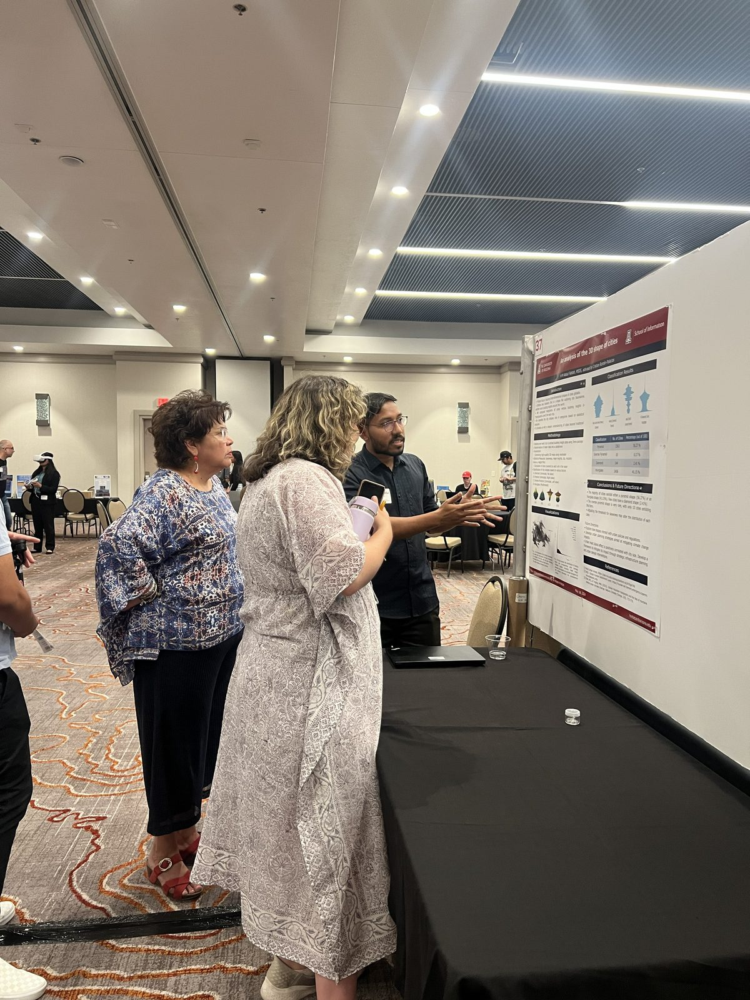

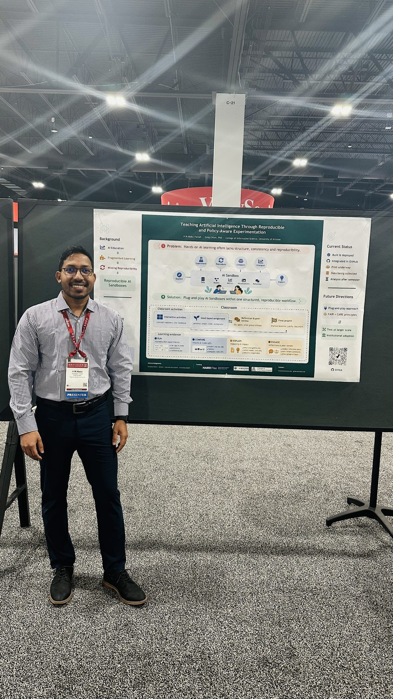

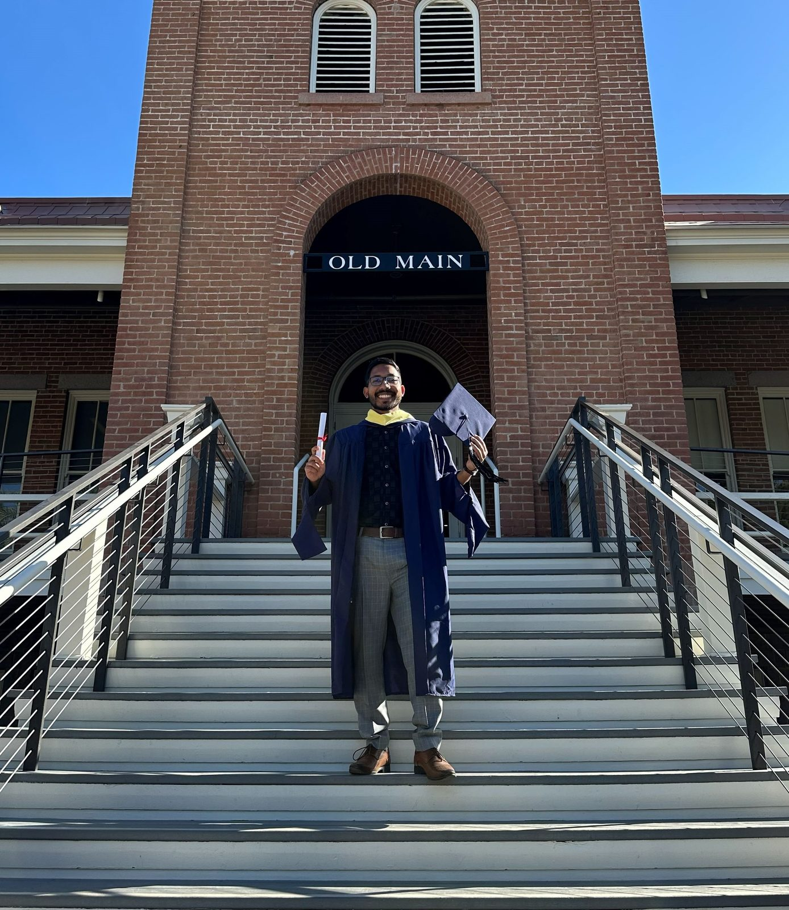

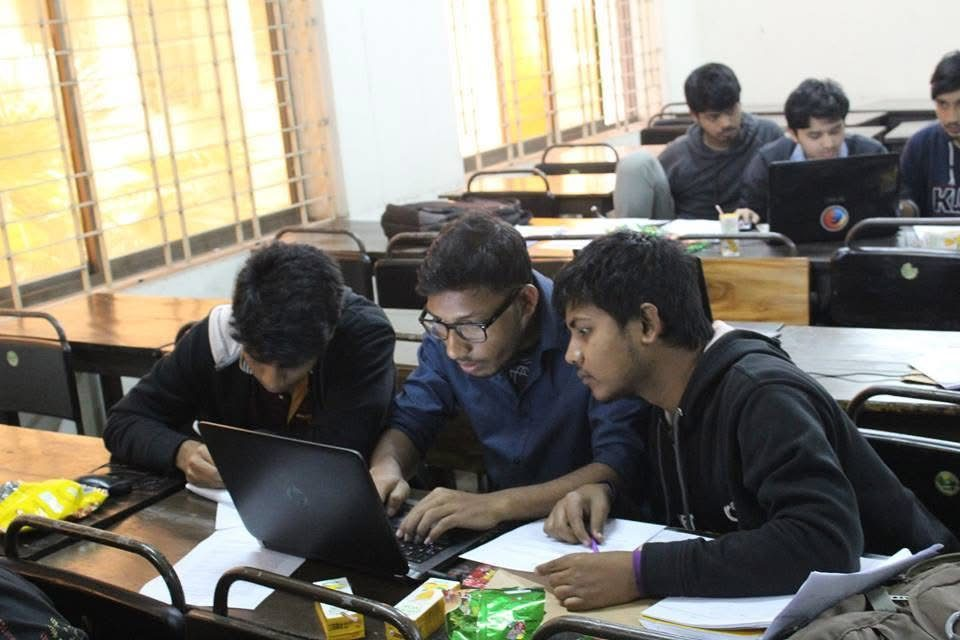

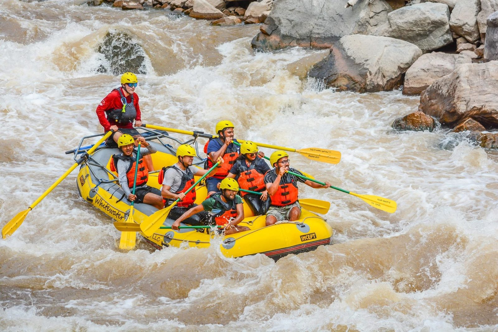


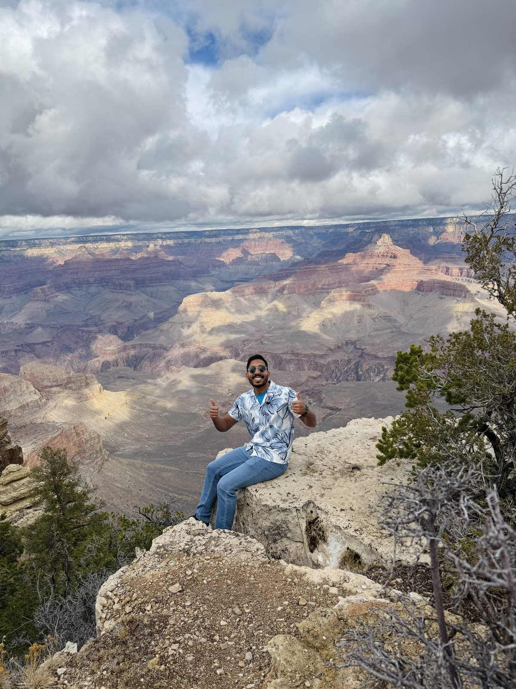

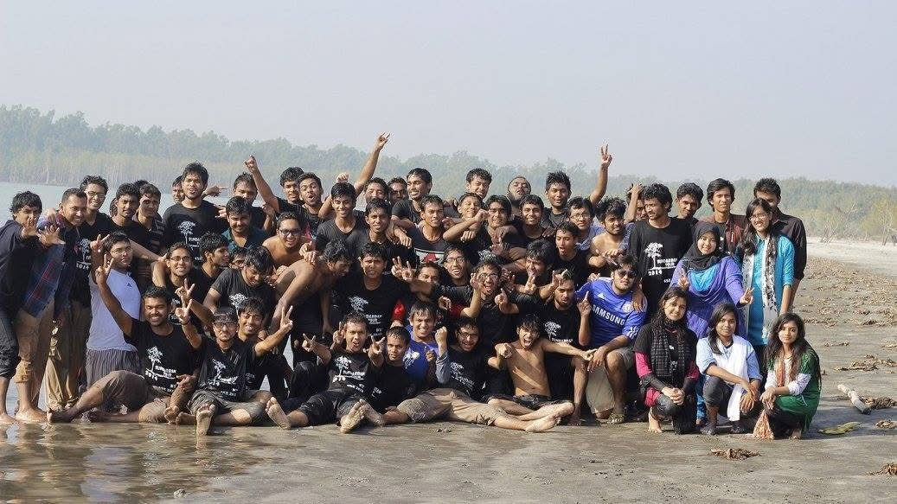

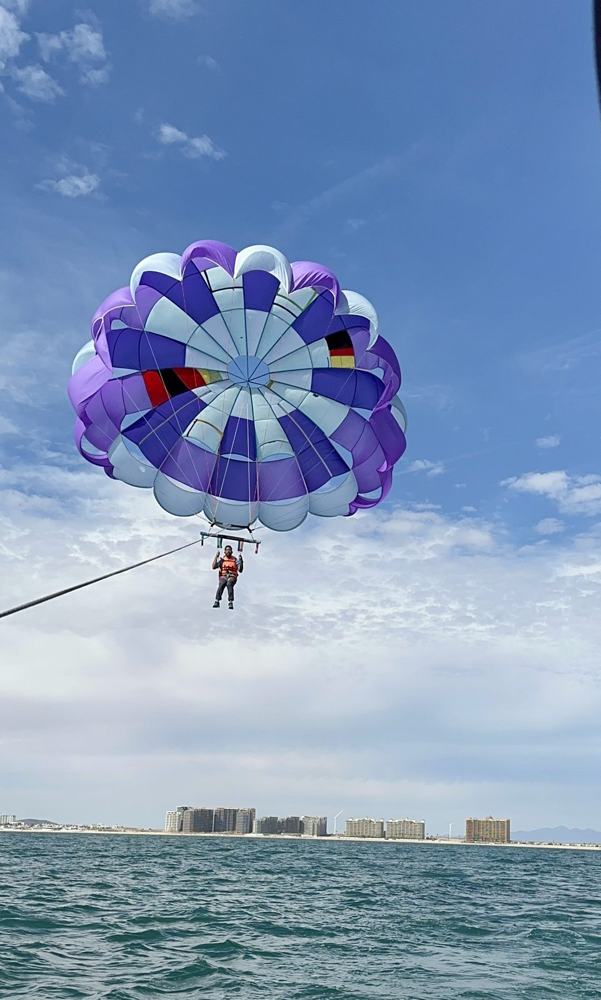

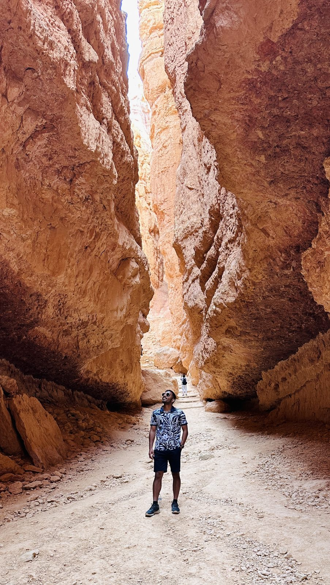

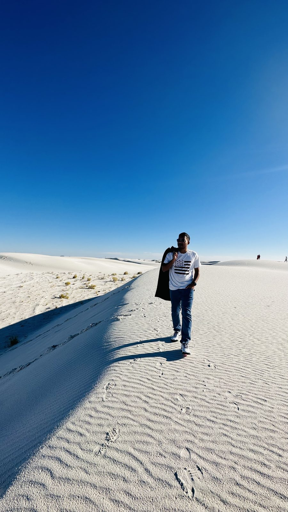

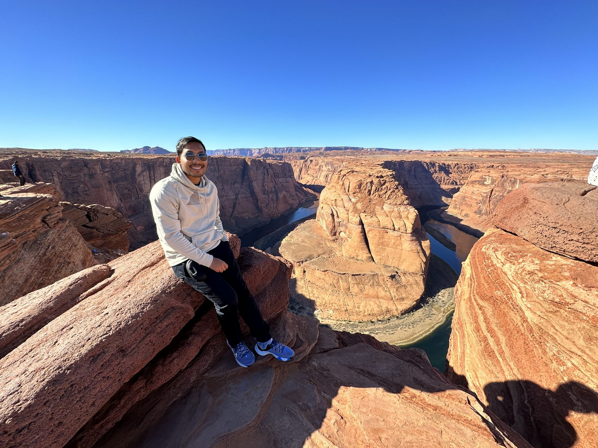

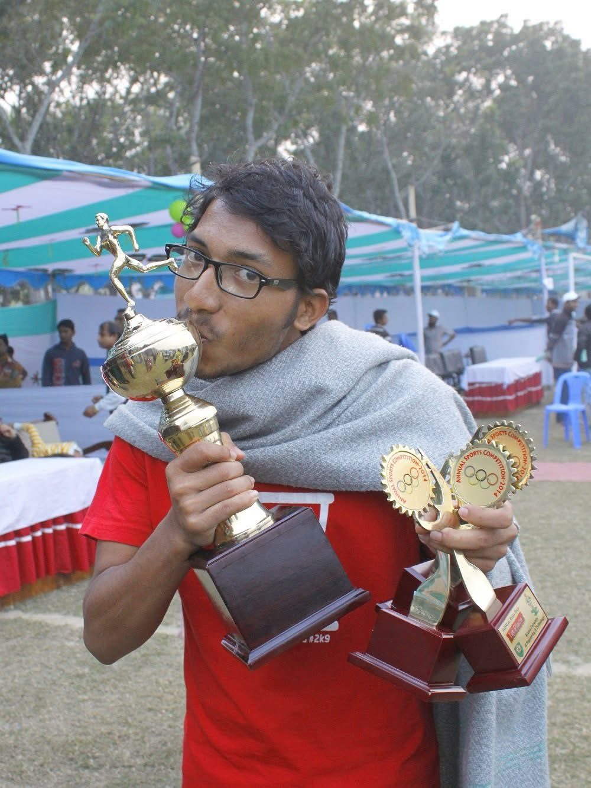

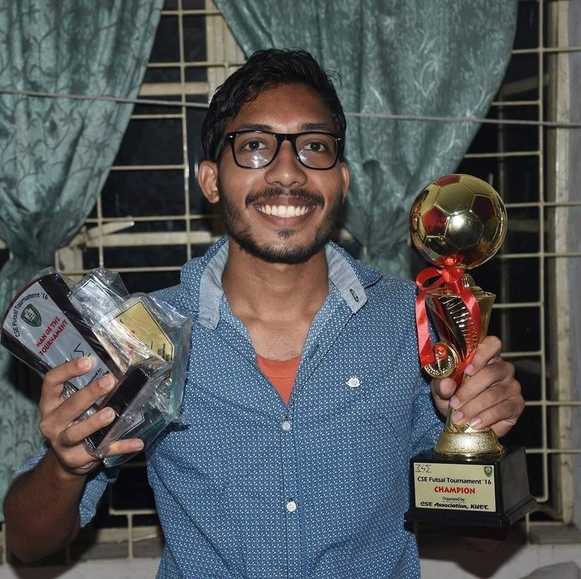